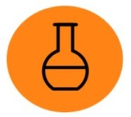
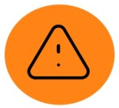
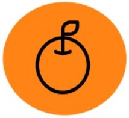
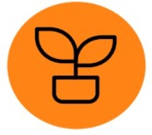

Ramas de la Botánica
Fitoquímica
Es el estudio de los productos fitoquímicos, que son aquellos que se pueden derivar de las plantas.
Histología
Es el estudio de la microanatomía de los tejidos y células de animales y plantas.
Biología celular

Es el estudio de las funciones y estructuras de la célula, buscando explicar sus procesos y funciones.
Fitopatología
Estudia las enfermedades que las plantas sufren, ya sea a causa de organismos infecciosos o de factores como las condiciones ambientales.
Paleobotánica
Es el estudio y recuperación de restos vegetales de épocas pasadas, ya fosilizados o conservados de otra forma.
Geobotánica
Estudia las diferentes formas en que las plantas se adaptan a las condiciones particulares de sus entornos, tanto de forma individual como en comunidad.
Preguntas Frecuentes
La función de la botánica es investigar las propiedades y las características de las plantas
La botánica es una ciencia natural que se encarga del estudio de los vegetales desde un punto de vista molecular, funcional, macroscópico y microscópico. Es el estudio de todas las plantas tomando en cuenta su composición, características, clasificación, adaptación y funciones entre otras.
Estas son las principales ramas de la botánica:
- Fitoquímica.
- Biología celular.
- Histología.
- Fitopatología.
- Fitogeografía.
- Geobotánica.
- Paleobotánica.
- Briología.
Entre sus principales características se mencionan las siguientes: